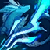
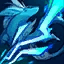

Rotas:
1ª Opção:


2ª Opção:


 



3ª Opção:


1ª Opção:
2ª Opção:
3ª Opção:
Mil anos atrás, artefatos mágicos chamados "Runas do Mundo" foram redescobertos. Nas décadas seguintes
após esse evento, o conhecimento das Runas começou a se espalhar à medida que mais runas foram
desenterradas. As mentes mais brilhantes do mundo estudaram os antigos glifos, tentando determinar os
poderes que possuíam. Poucos poderiam começar a entender a importância de suas origens, ou o poder
absoluto contido nelas. Alguns supuseram que as Runas eram parte integrante da criação da própria
Runeterra. O primeiro uso desses artefatos misteriosos se mostrou catastrófico, pois reformulou a
paisagem de nações inteiras. A desconfiança cresceu rapidamente à medida que aqueles que conheciam as
Runas imaginavam que tal "Poder dos Criadores" poderia ser usado como arma. Conflitos mais tarde
relacionados a esses artefatos mágicos eram conhecidos como Guerras Rúnicas.
Os invocadores podem usar uma runa por nível de poder em League of Legends, e mantêm suas Runas em um
tomo chamado de Livro de Runas. Antes de uma partida começar, um Invocador poderá escolher entre até
vinte configurações de runas diferentes definidas anteriormente em seu livro de runas. Isso permite que
o Invocador tenha flexibilidade rápida na escolha de uma configuração do livro de runas mais adequada
para qualquer campeão que possa usar em qualquer um dos Campos de Justiça de Valoran.